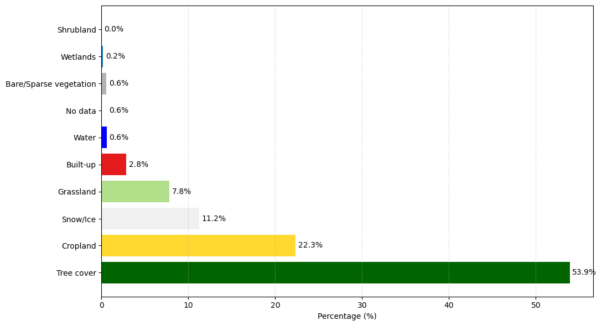

To model elephant habitat suitability within the Eastern Forest Complex (EFCOM), we compiled a set of environmental predictors representing both natural habitat conditions and human-influenced landscape features. These covariates capture vegetation quality, land cover patterns, and the proximity of landscape elements that strongly shape elephant movement and space use.
The following subsections describe each covariate and present summary visualizations.
Land Cover Composition
The land cover map below shows the spatial distribution of major habitat types within the Eastern Forest Complex (EFCOM). Evergreen forest (deep green) dominates the interior of the protected area, forming the core ecological zone where most elephant activity is expected to occur. Surrounding the protected forest, large patches of cropland and plantation (yellow and light green) create a fragmented transition zone between forest and human-modified landscapes.
Urban and built-up areas (red) appear in scattered clusters, mostly along road networks and settlement centers, while water bodies (blue) are concentrated in the southern part of the region. This mosaic of forest, agriculture, villages, and infrastructure reflects the complex ecological and social environment in which elephants move.
The land cover distribution shows that tree cover dominates the study region, accounting for over half of all pixels and forming the ecological core of the Eastern Forest Complex. Cropland makes up about 22% of the area, creating a wide agricultural belt around the forest and representing the primary zone of human–elephant interaction and conflict.
Grassland, built-up areas, and bare land occur in smaller patches but play an important role along forest edges and settlement clusters. Water bodies and wetlands represent less than 1% of the region but provide essential resources for elephant movement. Snow/Ice appears due to classification artifacts in the satellite imagery and does not represent actual environmental conditions in Thailand.
Code
class_meaning = {0: "No data",10: "Tree cover",20: "Shrubland",30: "Grassland",40: "Cropland",50: "Built-up",60: "Bare/Sparse vegetation",80: "Snow/Ice",90: "Wetlands",95: "Water"}unique, counts = np.unique(lc_clip, return_counts=True)df_lc = pd.DataFrame({"ClassValue": unique,"Meaning": [class_meaning.get(v, "Unknown") for v in unique],"Count": counts})df_lc["Percentage"] = (df_lc["Count"] / df_lc["Count"].sum() *100).round(2)df_lc
ClassValue
Meaning
Count
Percentage
0
0
No data
292666
0.55
1
10
Tree cover
28505457
53.90
2
20
Shrubland
3019
0.01
3
30
Grassland
4133549
7.82
4
40
Cropland
11810797
22.33
5
50
Built-up
1499059
2.83
6
60
Bare/Sparse vegetation
292243
0.55
7
80
Snow/Ice
5949448
11.25
8
90
Wetlands
91315
0.17
9
95
Water
312213
0.59
Landcover types overview
To understand which environments elephants actually use within EFCOM, we extracted the land cover value at each occurrence point and calculated its percentage distribution. The bar chart below summarizes these results.
The pattern aligns closely with ecological expectations:
- Tree cover dominates (53.9%), confirming that forests remain the core habitat for wild elephants.
- Cropland (22.3%) is the second-largest category, reflecting how elephants frequently travel through or feed near agricultural fields—one of the main drivers of human–elephant conflict.
- Smaller proportions of grassland and snow/ice suggest occasional movement through mixed or transitional landscapes.
- Built-up and water areas account for less than 3%, indicating limited use of heavily disturbed zones.
Overall, this distribution supports the idea that elephants inhabit predominantly forested areas but regularly approach human-modified land uses.
Code
# Sort dataframe by % (largest to smallest)df_plot = df_lc.sort_values("Percentage", ascending=False).copy()# Map colorsdf_plot["Color"] = df_plot["ClassValue"].map(class_colors)# Plotplt.figure(figsize=(11, 6))plt.grid(axis="x", linestyle="--", alpha=0.4)plt.barh(df_plot["Meaning"], df_plot["Percentage"], color=df_plot["Color"])plt.xlabel("Percentage (%)")# Add % text to barsfor i, v inenumerate(df_plot["Percentage"]): plt.text(v +0.3, i, f"{v:.1f}%", va="center")plt.tight_layout()plt.show()

LandCover Types of Elephant Occurrence
NDVI
We assembled NDVI data covering the entire study area to represent vegetation conditions. NDVI provides a direct indication of vegetation health and habitat quality and was incorporated as a key environmental variable to help the model characterize natural resource availability across the landscape.
We collected spatial layers representing major roads, village built-up areas, and water bodies across the study region. Among these, water features represent natural landscape elements, while roads and villages are human-made. To translate these features into variables the model could use, we calculated the shortest distance from each elephant occurrence point to each of these elements. These distance-based measurements allowed us to capture how proximity to natural and anthropogenic features influences elephant movement in a quantifiable way.
Study Region: Eastern Forest Complex and surrounding human features.
Correlation Between Features
The correlation matrix shows that most predictors are not strongly correlated, supporting their joint use in the Random Forest model. NDVI is moderately negatively correlated with distance to water and villages, reflecting how greener areas tend to occur closer to natural and human-modified edges. The strongest correlations appear among the human-related variables: distance to village and distance to water (0.89), and distance to road and distance to village (0.64), which is expected because settlements, roads, and water sources often cluster spatially. Despite these relationships, none of the correlations are high enough to cause concern for Random Forest, confirming that all variables can be meaningfully included without multicollinearity issues.
Code
import seaborn as snsplt.figure(figsize=(6,5))sns.heatmap(df[["NDVI","dist_water","dist_road","dist_village"]].corr(), annot=True, cmap="YlGnBu")plt.title("Correlation Between Features")plt.show()